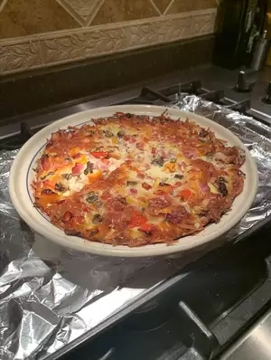

Quiche

How to Make Quiche
When it comes to quiche, we side with our own Chef John: "A proper quiche should be rich, custardy, and luxurious — not some kind of dense, baked omelet." Read on to get his tips for how to make a quiche.
Ingredients
- 3 eggs
- 3 tablespoons butter or margarine
- chopped bacon
Steps
- f you're adding onions, leeks, or other chopped veggies, give them a quick sauté first.
- Prep your deep-dish pie pan (or tart pan) with pie dough for a single crust. We're going to "blind bake" the quiche crust before pouring in the filling.